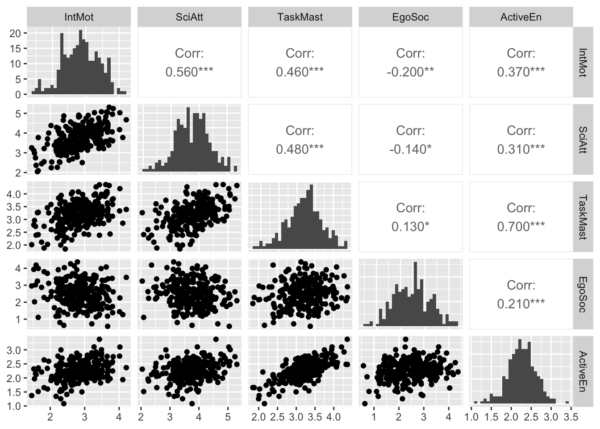

library(rio)
library(lavaan)
library(semTools)
library(ggplot2)
library(GGally)3 Indirect Effects
Note
You can download the R code used in this lab by right-clicking this link and selecting “Save Link As…” in the drop-down menu: indirecteffects.R
3.1 Loading R Packages
If you want to use the functionality of a package, you will need to “load” the package into your environment. To do that, we use the library function:
3.2 Loading Data
Load the data into your environment. We will use the same data we’ve used in the previous Lab:
meece <- import(file = "data/meece.csv")3.3 Data Exploration
Before analyzing the data, we can look at the distribution of the variables to see if they follow a normal distribution (one of the main assumptions of the ML estimator that lavaan uses by default).
ggpairs(meece, progress = FALSE, diag = list(continuous = "barDiag"))
This plot shows several things: on the diagonal, the univariate distribution of the variables (here using a histogram), in the lower triangle, we see scatter plots of pairs of variables, which appear to indicate that the relationships between variables are approximately linear. In the upper triangle, we see the actual Pearson correlation coefficient with significance information.
Do the histograms look “normal” enough? What can we do if there are issues with normality?
Package semTools includes a set of functions to evaluate the skew and kurtosis of observed variables:
# Univariate skew and kurtosis
apply(meece, 2, skew) IntMot SciAtt TaskMast EgoSoc ActiveEn
skew (g1) -0.1212397 -0.1038950 -0.1987473 0.08361646 -0.2038482
se 0.1530931 0.1530931 0.1530931 0.15309311 0.1530931
z -0.7919347 -0.6786394 -1.2982121 0.54618045 -1.3315306
p 0.4283988 0.4973664 0.1942145 0.58494190 0.1830145apply(meece, 2, kurtosis) IntMot SciAtt TaskMast EgoSoc ActiveEn
Excess Kur (g2) -0.2634421 0.04668221 0.1033383 -0.3550750 0.57178812
se 0.3061862 0.30618622 0.3061862 0.3061862 0.30618622
z -0.8603982 0.15246347 0.3375015 -1.1596702 1.86745217
p 0.3895696 0.87882140 0.7357388 0.2461831 0.06183847# Multivariate skew and kurtosis
mardiaSkew(meece) b1d chi df p
0.7426468 31.6862628 35.0000000 0.6288746 mardiaKurtosis(meece) b2d z p
34.1571166 -0.8059507 0.4202713 3.4 Model Specification
Next, we will specify the same model as we did in the previous lab, which aligned with the model tested by the authors. This time, we will add the code necessary to compute the indirect and total effects present in the model. To do so, we need to give each path in the model a label that we can use to define the indirect and total effects. We can do that by using the * symbol. For example, in the code below b1*TaskMast labels the path from Task Mastery to Active Engagement as b1. In indirect effects, it is customary to label paths from the predictor to the mediator with a, paths from the mediator to the outcome with b, and paths from the predictor to the outcome with c.
mod1 <- '
ActiveEn ~ b1*TaskMast + b2*EgoSoc + c1*IntMot
TaskMast ~ a1*SciAtt + a2*IntMot
EgoSoc ~ a3*SciAtt + a4*IntMot + b3*TaskMast
SciAtt ~~ IntMot
# indirect and total effect between IntMot > AciveEn
im.tm.ind := a2*b1
im.tm.es.ind := a2*b3*b2
im.es.ind := a4*b2
im.total.ind := (a2*b1) + (a2*b3*b2) + (a4*b2)
im.total := (a2*b1) + (a2*b3*b2) + (a4*b2) + c1
# indirect effects between SciAtt > AciveEn
sa.tm.ind := a1*b1
sa.tm.es.ind := a1*b3*b2
sa.es.ind := a3*b2
sa.total.ind := (a1*b1) + (a1*b3*b2) + (a3*b2)
'Once we have labeled all the paths, we can use the labels to specify the indirect and total (indirect) effects. Since these are parameters that we estimate after the direct effects have already been estimated, we need to give each new parameter a name. It helps if these names make sense to you. For example, in the code above, the parameter im.tm.ind refers to the indirect effect (ind) from IntMot (im) via TaskMast (tm).
To get the total indirect effect, you can simply add all the specific indirect effects together. If there is a direct effect from the main predictor to the main outcome, then we can also compute the total effect, by adding the direct effect (here c1) to the total indirect effects.
Why is there no total effect for the connection between SciAtt > ActiveEn?
You can also see that some indirect effects are made up of more than two paths. This is the case with the paths that include the directed effect from Task Mastery to Ego Social goals (e.g., im.tm.es.ind := a2*b3*b2).
3.5 Model Estimation
Estimating a path model in R is super simple! However, when we have indirect effects, we typically use bootstrapped standard errors (because multiplying two parameters by each other results in a distribution that is not Normally distributed and would result in making more Type I errors if we test significance). Typically, you would request at least 1000 bootstrap samples, but in the interest of saving time, we will use just 100 in this Lab. To make sure we’re all getting the same results, we will also specify a seed (iseed), which ensures that the bootstrap samples are reproducible.
fit1 <- sem(model = mod1, data = meece,
se = "bootstrap", bootstrap = 100,
iseed = 8789)3.6 Parameter Interpretation
We will skip over the evaluation step for today and focus on the interpretation of the results.
To examine the parameter estimates when we rely on bootstrapping, we can use the parameterEstimates() function. Bootstrapped confidence intervals can be created in different ways, but the current best standard is to use bias-corrected percentiles (bca.simple). With the arguments below, we tell the function the hide the z statistic (zstat = FALSE) and p-value (pvalue = FALSE), because those are still based on the classic Normality assumption. In addition, we can ask that the output be shown as text, which will put the estimates in the classic lavaan summary format (easier to read):
parameterEstimates(fit1, boot.ci.type = "bca.simple",
ci = TRUE, se = TRUE,
zstat = FALSE, pvalue = FALSE,
output = "text")
Regressions:
Estimate Std.Err ci.lower ci.upper
ActiveEn ~
TaskMast (b1) 0.459 0.036 0.370 0.523
EgoSoc (b2) 0.070 0.023 0.013 0.113
IntMot (c1) 0.072 0.032 0.022 0.157
TaskMast ~
SciAtt (a1) 0.255 0.054 0.157 0.384
IntMot (a2) 0.248 0.063 0.157 0.414
EgoSoc ~
SciAtt (a3) -0.179 0.091 -0.374 0.015
IntMot (a4) -0.371 0.100 -0.569 -0.217
TaskMast (b3) 0.504 0.106 0.295 0.724
Covariances:
Estimate Std.Err ci.lower ci.upper
IntMot ~~
SciAtt 0.184 0.025 0.135 0.240
Variances:
Estimate Std.Err ci.lower ci.upper
.ActiveEn 0.059 0.005 0.051 0.068
.TaskMast 0.164 0.015 0.140 0.192
.EgoSoc 0.495 0.043 0.408 0.581
IntMot 0.290 0.024 0.250 0.343
SciAtt 0.371 0.033 0.311 0.434
Defined Parameters:
Estimate Std.Err ci.lower ci.upper
im.tm.ind 0.114 0.032 0.070 0.190
im.tm.es.ind 0.009 0.005 0.002 0.020
im.es.ind -0.026 0.012 -0.054 -0.006
im.total.ind 0.096 0.035 0.044 0.174
im.total 0.168 0.045 0.094 0.277
sa.tm.ind 0.117 0.025 0.074 0.169
sa.tm.es.ind 0.009 0.004 0.003 0.022
sa.es.ind -0.013 0.008 -0.028 0.003
sa.total.ind 0.114 0.029 0.067 0.171The output above gives us the unstandardized estimates, with a lot of other information. When using bootstrapping, we will focus on the estimates (est), and the lower (ci.lower) and upper (ci.upper) bounds of the 95% confidence interval. If this interval does does not include 0 (i.e., both bounds are positive or negative), we can conclude that the effect is significant (\(\alpha = .05\)).
What do the estimates and confidence intervals tell us about the indirect effects?
3.7 Example Write-Up of Above Results
Intrinsic Motivation was significantly related to Active Engagement both directly (B = .072, 95% CI [.022, .157]) and through three indirect paths, indicating partial mediation [assuming I have defensible causal assumptions]. Two indirect effects were positive and consistent with the direct effect, whereas the oe indirect effect (via Ego-Social Goals) was slightly negative and inconsistent. Thus, some of the positive effect via Task Mastery Goals on Ego-Social Goals (and indirectly Active Engagement) are diminished by the negative effect of Science Attitudes on Ego-Social Goals. Overall, Active Engagement is expected to increase by .217 (95% CI [.119, .372]) given a one-unit increase in Intrinsic Motivation through all direct and indirect pathways.
Science Attitudes were significantly related to Active Engagement through two of three indirect paths. The two significant indirect effects were positive, whereas the non-significant indirect effect (via Ego-Social Goals) was slightly negative (B = -.013, 95% CI [-.028, .003]). Looking at the direct effects that make up the non-significant indirect effect, Science Attitudes was not significantly related to Ego-Social Goals (B = -.179, 95% CI [-.374, .015]). Overall, Active Engagement is expected to increase by .164 (95% CI [.094, .257]) given a one-unit increase in Science Attitudes through all indirect pathways (no direct path was included).
3.8 Summary
In this R lab, you were introduced to the steps involved in specifying, estimating, and interpreting indirect effects. Below, you’ll find two Bonus sections that demonstrate how to extract standardized estimates with 95% CIs and how to include a moderator into the mediation model (moderated mediation). In the next R Lab, you will learn all about model evaluation (i.e., does the model do a good job representing the associations between the variables?).
3.9 Bonus 1: Standardized Indirect Effects (with correct 95% Confidence Interval)
Although lavaan can give us the standardized estimates of the indirect effects, the confidence intervals that it provides are not based on the bootstrapped samples. To get the correct 95% confidence intervals, we can use the package semhelpinghands, which includes several functions that help us use lavaan to its fullest extend.
library(semhelpinghands)To use the package, we use the function standardizedSolution_boot_ci() to compute the correct 95% confidence interval. We can use the print() function to get a prettier version of the output.
ci_boot <- standardizedSolution_boot_ci(fit1)
print(ci_boot,
output = "text")
Standardized Estimates Only
Standard errors Bootstrap
Confidence interval Bootstrap
Confidence Level 95.0%
Standardization Type std.all
Number of requested bootstrap draws 100
Number of successful bootstrap draws 100
Regressions:
Standardized Std.Err ci.lower ci.upper
ActiveEn ~
TaskMast (b1) 0.630 0.041 0.526 0.704
EgoSoc (b2) 0.150 0.050 0.045 0.252
IntMot (c1) 0.110 0.047 0.023 0.210
TaskMast ~
SciAtt (a1) 0.324 0.067 0.185 0.454
IntMot (a2) 0.279 0.064 0.168 0.411
EgoSoc ~
SciAtt (a3) -0.145 0.071 -0.304 -0.020
IntMot (a4) -0.267 0.071 -0.386 -0.090
TaskMast (b3) 0.323 0.066 0.179 0.452
Covariances:
Standardized Std.Err ci.lower ci.upper
IntMot ~~
SciAtt 0.560 0.045 0.451 0.631
Variances:
Standardized Std.Err ci.lower ci.upper
.ActiveEn 0.487 0.043 0.409 0.579
.TaskMast 0.716 0.053 0.582 0.809
.EgoSoc 0.884 0.035 0.801 0.941
IntMot 1.000 NA NA NA
SciAtt 1.000 NA NA NA
Defined Parameters:
Standardized Std.Err ci.lower ci.upper
im.tm.ind 0.175 0.043 0.108 0.269
im.tm.es.ind 0.013 0.007 0.003 0.029
im.es.ind -0.040 0.018 -0.076 -0.007
im.total.ind 0.149 0.049 0.070 0.250
im.total 0.259 0.060 0.135 0.398
sa.tm.ind 0.204 0.045 0.119 0.290
sa.tm.es.ind 0.016 0.007 0.004 0.032
sa.es.ind -0.022 0.014 -0.052 -0.001
sa.total.ind 0.198 0.052 0.097 0.2993.10 Bonus 2: Moderated Mediation Example
Sometimes, we hypothesize that one or more paths that make up an indirect effect are themselves moderated (so-called moderated mediation). In the example below, we take the arbitrary moderation model from the previous Lab and extend it with a new outcome variable so that there is an indirect effect. In this model, Active Engagement acts as a mediator between Ego-Social Goal Orientations and Science Attitudes (Note: this model is not based on any theory, it was solely set up to illustrate this method). Intrinsic Motivation is included as a moderator on the path from Ego-Social Goals to Active Engagement. Thus, in this model, we hypothesize that Intrinsic Motivation affects the indirect effect by moderating this first part of the indirect effect. You can also specify a model where moderation occurs in the second part of the indirect effect (or both, or the direct effect, or combinations of everything).
We will again use the modsem package to help us with the interaction effect. As an initial step, we only want to focus on whether or not the moderator significantly affects the indirect effect. We can test this by specifying a so-called index of moderated mediation parameter, which represents the indirect effect of the interaction term and the b-path. We still use bootstrapping for testing the significance of any paths:
library(modsem)
mod2 <- '
SciAtt ~ b*ActiveEn + c*EgoSoc
ActiveEn ~ a1*EgoSoc + a2*IntMot + a3*EgoSoc:IntMot
# index of moderated mediation
ind.mod.im := a3*b
'
fit2 <- modsem(model = mod2, data = meece, method = "pind",
se = "bootstrap", bootstrap = 100,
iseed = 8789)To look at the parameter estimates as we’ve done before, we need to extract the lavaan object from the modsem object (otherwise functions such as parameterEstimates won’t work):
fit2_lav <- extract_lavaan(fit2)
parameterEstimates(fit2_lav, boot.ci.type = "bca.simple",
ci = TRUE, se = TRUE,
zstat = FALSE, pvalue = FALSE,
output = "text")
Regressions:
Estimate Std.Err ci.lower ci.upper
SciAtt ~
ActiveEn (b) 0.619 0.100 0.380 0.797
EgoSoc (c) -0.175 0.051 -0.245 -0.037
ActiveEn ~
EgoSoc (a1) 0.393 0.126 0.176 0.660
IntMot (a2) 0.506 0.121 0.245 0.774
EgScIntMt (a3) -0.090 0.042 -0.175 -0.009
Variances:
Estimate Std.Err ci.lower ci.upper
.SciAtt 0.319 0.027 0.269 0.403
.ActiveEn 0.093 0.008 0.080 0.111
Defined Parameters:
Estimate Std.Err ci.lower ci.upper
ind.mod.im -0.056 0.028 -0.127 -0.007In the output above, we can see that: - Both main effects of Ego-Social Goals and Intrinsic Motivation are positive and significant (the 95% CI does not include 0); - The interaction effect is significant and negative (consistent with what we found in the previous Lab); - The path from the intermediate variable (Active Engagement) to Science Attitudes is significant and positive, whereas the direct effect of Ego-Social Goals on Science Attitudes is significant and negative.
Thus, although the direct association is negative, the indirect association via Active Engagement looks to be positive. But what role does Intrinsic Motivation play in moderating that indirect path?
The index of moderated mediation is negative and significant. This suggests that Intrinsic Motivation weakens the indirect effect of Ego-Social Goals on Science Attitudes through Active Engagement: the higher intrinsic motivation, the weaker the indirect effect. We can compute the indirect effect at several levels of the moderator to understand the moderated mediation effect better. To do so, we first compute simple slopes (i.e., the effect of the main predictor on the mediator at different levels of the moderator) and then combine those with the b-path to get several conditional indirect effects. It is typical to look at the impact of the moderator at it’s mean value and 1 SD above and below that mean, so let’s compute those first:
mean(meece$IntMot)[1] 2.85mean(meece$IntMot) - sd(meece$IntMot)[1] 2.31mean(meece$IntMot) + sd(meece$IntMot)[1] 3.39Next, we can plug these values into our model specification to compute simple slopes and conditional indirect effects as follows:
mod3 <- '
SciAtt ~ b*ActiveEn + c*EgoSoc
ActiveEn ~ a1*EgoSoc + a2*IntMot + a3*EgoSoc:IntMot
# index of moderated mediation
ind.mod.im := a3*b
# simple slopes
im.low := a1 + a3*2.31
im.mean := a1 + a3*2.85
im.high := a1 + a3*3.39
# conditional indirect effect
a1.b.low := im.low * b
a1.b.mean := im.mean * b
a1.b.high := im.high * b
'
fit3 <- modsem(model = mod3, data = meece, method = "pind",
se = "bootstrap", bootstrap = 100,
iseed = 8789)In the output below, we can see that the indirect effect gets smaller as the moderator value goes from low, to mean, to high:
fit3_lav <- extract_lavaan(fit3)
parameterEstimates(fit3_lav, boot.ci.type = "bca.simple",
ci = TRUE, se = TRUE,
zstat = FALSE, pvalue = FALSE,
output = "text")
Regressions:
Estimate Std.Err ci.lower ci.upper
SciAtt ~
ActiveEn (b) 0.619 0.100 0.380 0.797
EgoSoc (c) -0.175 0.051 -0.245 -0.037
ActiveEn ~
EgoSoc (a1) 0.393 0.126 0.176 0.660
IntMot (a2) 0.506 0.121 0.245 0.774
EgScIntMt (a3) -0.090 0.042 -0.175 -0.009
Variances:
Estimate Std.Err ci.lower ci.upper
.SciAtt 0.319 0.027 0.269 0.403
.ActiveEn 0.093 0.008 0.080 0.111
Defined Parameters:
Estimate Std.Err ci.lower ci.upper
ind.mod.im -0.056 0.028 -0.127 -0.007
im.low 0.185 0.037 0.084 0.254
im.mean 0.136 0.027 0.077 0.183
im.high 0.087 0.033 0.025 0.163
a1.b.low 0.114 0.029 0.054 0.170
a1.b.mean 0.084 0.021 0.047 0.132
a1.b.high 0.054 0.022 0.019 0.115